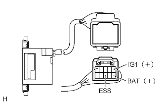

The back guide monitor system predicted course is not displayed, and "I can't guide" is displayed. |
| Step 1 | Maximum steering angle setting confirmation |
Turn the steering to the left and right to set the maximum steering angle point.
|
| ||||
| NG | |
| Step 2 | Service inspection (steering sensor) |
Service inspection
Start the diagnostic and check if there is a display of "Diag Code 5C-41, 42" in an individual diagram.(The point isreference)
| Inspection result | procedure |
|---|---|
| 5C-42 | A |
| 5C-41 | B |
| No diary cord | C |
|
| ||||
|
| ||||
| A | |
| Step 3 | Wire harness and connector inspection (steering sensor power supply system) |
referenceConduction inspection
|  |
Using a SST (Toyota Electrical Tester), check the conduction between each terminal ← → body ground from the back of the connector with the vehicle side wire harness connector separated.
| Measurement terminal (terminal number) | Measurement conditions | standard |
|---|---|---|
| ESS (8) ← → Body Earth | Always | There is an conductor |
Voltage inspection
Use a SST (Toyota Electrical Tester) to check the voltage between each terminal from the back of the connector while the vehicle side wire harness connector is separated.
| Measurement terminal (terminal number) | Measurement conditions | Reference value |
|---|---|---|
| IG1 (5) ← → ESS (8) | IG switch ON | 10-14V |
| BAT (10) ← → ESS (8) | Always | 10-14V |
|
| ||||
| OK | ||
| ||